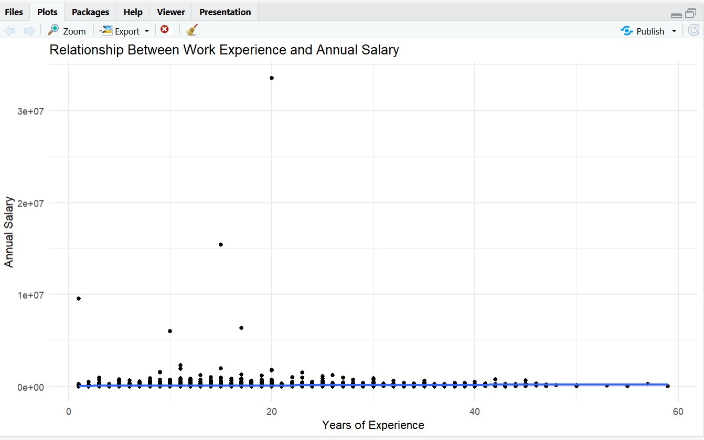
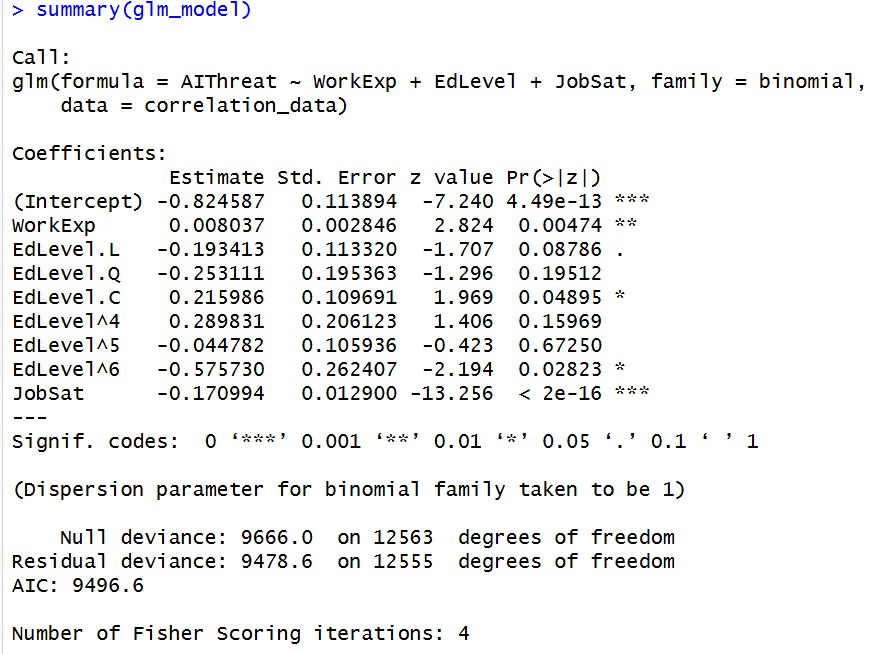
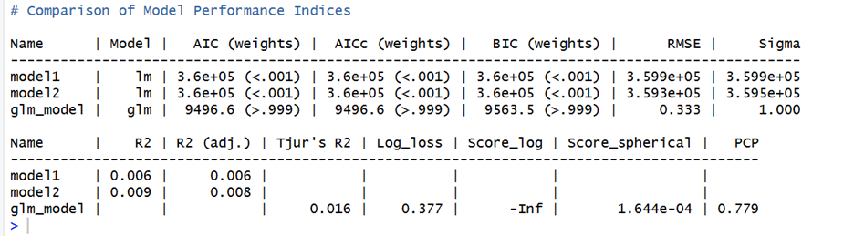

Turning data into actionable insights
This project involved conducting an end-to-end statistical analysis of global Developers’ survey data using R to explore the relationship between work experience, salary, job satisfaction, education level, and perceptions of AI as a threat to developers. Using data cleaning, exploratory data analysis, hypothesis testing, correlation analysis, regression modeling, and data visualization techniques, the project identified key factors influencing annual compensation and workplace satisfaction among professional developers.
The project was also geared towards To predicting the annual salary using years of experience, education level, job satisfaction, and age.

Using ConvertedCompYearly, WorkExp variables, I created the first model. This model examines
how years of experience predict salary. It assumes a linear relationship: more experience
higher salary. This simple linear regression model was developed to examine the effect of years
of professional experience on annual salary. The results indicate whether experience significantly
predicts income levels among respondents.
The dots represent individual respondents and the line shows the regression trend which
helps visually confirm whether the relationship is positive or negative as well the data is widely
spread or closely clustered. A scatter plot with a fitted regression line was created to visualize
the relationship between years of experience and annual salary. The upward trend of the regression
line suggests a positive relationship, indicating that individuals with more experience tend to earn
higher salaries.


Based on the metrics in the table above, the two linear models (model1 and model2) exhibit extremely low explanatory power, with R-squared values of 0.0059 and 0.0094, respectively. This means that less than 1% of the variance in the outcome variable is accounted for by the predictors in either model which is a negligible effect in practical terms. While model2 technically has a slightly higher R-squared than model1, this marginal difference is substantively meaningless. The glm_model reports “NA” for R-squared, which is expected for generalized linear models (e.g., logistic, Poisson, or Gamma regression) where traditional R² is not directly applicable; alternative pseudo-R² metrics would be needed for a comparable goodness-of-fit assessment in that framework.